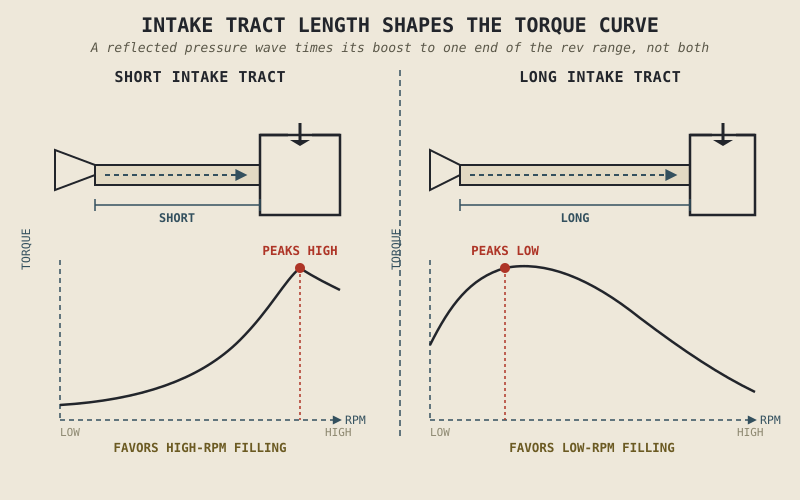

Twist the throttle on a stationary motorcycle and nothing about the engine's fuel changes directly. What you're actually controlling is a valve that lets more air in — and the fuel system's entire job, whether it's a carburetor or electronic fuel injection, is to notice how much air just arrived and add the right amount of fuel to match it. Most riders assume the throttle controls fuel. It doesn't. It controls air, and everything else in this chapter follows from that one correction.
Chapter 2.2 described the intake stroke simply: the piston descends, pressure drops, air and fuel get drawn in. That's true as far as it goes, but it treats "getting air and fuel in" as a solved problem the moment the intake valve opens. It isn't. How much air actually arrives, how well it mixes with fuel, and how efficiently the cylinder actually fills are all real engineering problems with real consequences for how an engine performs — and they're this chapter's subject.
The Throttle Controls Air, Not Fuel
A throttle body sits in the intake tract, upstream of the cylinder, holding a valve that opens further as the rider twists the throttle. Closed, it restricts how much air can flow through toward the engine. Wide open, it gets out of the way almost entirely. This single valve, more than any other single component in the intake system, is why Chapter 1.4 was able to say the rider is wired directly into the machine's control loop — the throttle isn't a suggestion sent to a computer that decides what to do with it, at least not fundamentally; it's a direct, physical restriction on the one raw material combustion cannot happen without.
Once air is metered by the throttle, the fuel system's job is to match it precisely. Air arriving without enough fuel burns leaner than intended and can run hot; fuel arriving without enough air burns richer than intended and wastes energy as unburned fuel exiting through the exhaust. Getting this air-fuel ratio right, cylinder-cycle after cylinder-cycle, at every throttle position and every RPM, is precisely what the fuel delivery systems in Chapter 2.13 are built to do. This chapter is about the air half of that pairing — because until the right amount of air actually arrives, there's nothing for the fuel system to match.
Volumetric Efficiency: The Cylinder Rarely Fills Completely
Here's a fact that surprises people who assume an engine's displacement number describes exactly how much air enters each cylinder every cycle: it usually doesn't. A cylinder with 500cc of swept volume very rarely actually draws in a full 500cc of air-fuel mixture at every engine speed. The ratio between how much air actually fills the cylinder and how much theoretically could, at a given RPM, is called volumetric efficiency, and it's rarely 100 percent across an engine's full operating range.
Several things get in the way of a perfect fill. The intake valve is only open for a limited window, set by the camshaft timing Chapter 2.7 covers in full, and at high RPM that window closes before the cylinder has had time to fill completely, simply because there isn't enough time at that speed for air to rush in and settle. Friction and turbulence as air moves through the intake tract, past the air filter, through the throttle body, and around the valve itself also cost some efficiency. This is why an engine's real, measured torque curve — the subject of Chapter 2.12 — rarely just climbs in a straight line with RPM. It rises and falls with how well the cylinder is actually filling at each engine speed, not with displacement alone.
Displacement tells you the cylinder's maximum capacity. Volumetric efficiency tells you how much of that capacity the engine is actually managing to use at any given moment — and that second number changes constantly with RPM.
Why Intake Tract Length Isn't Arbitrary
One of the more counterintuitive facts about intake design is that the physical length of the tract air travels through before reaching the cylinder is tuned on purpose, not simply made as short and unobstructed as possible. A column of air moving through a tube has inertia, and when an intake valve closes suddenly, the moving air column briefly compresses against it — like a small pressure wave bouncing back — and under the right timing, that reflected pressure wave arrives back at the valve just as it's about to open again for the next cycle, giving the incoming charge a small extra push.
The catch is that the tract length which times this pressure wave correctly for filling the cylinder well at low RPM is a different length than the one that times it correctly at high RPM, because the wave takes a fixed amount of time to travel back and forth regardless of engine speed. A short intake tract tends to favour high-RPM filling; a longer one tends to favour low-RPM filling. This is exactly why some higher-performance engines use variable-length intake systems that physically change tract length depending on RPM, and it's a preview of a pattern you'll see repeatedly through Part II: an engine tuned to be excellent at one end of its rev range is very often making a deliberate trade against the other end.

Two intake tracts of different lengths shown alongside torque curves — a short tract producing a curve that favours high RPM, a long tract producing one that favours low RPM.
A Common Misconception, Cleared Up Early
It's tempting to assume that a bigger throttle body, larger intake valves, or a straighter, wider intake tract must always be better, since more open space seems like it should always mean more air and therefore more power. This isn't reliably true, and the intake velocity idea above explains why: air moving through an oversized passage at low RPM slows down and loses the velocity needed to mix well with fuel and fill the cylinder efficiently, which can actually make an engine feel weaker and less responsive at low RPM and in everyday riding, even if it eventually makes slightly more peak power at very high RPM.
This is the intake system's version of the ratio-thinking Chapter 1.6 asked you to apply to spec sheets generally: a wider intake isn't automatically better. It's a component sized and tuned for a specific RPM range and a specific kind of riding, and evaluating it in isolation, the way a raw "bigger is better" instinct does, misses exactly what makes it good or bad for a given engine's purpose.
Where This Leads
This chapter has treated the air-fuel mixture as something whose arrival is the whole story, but Chapter 2.2 already flagged what happens next: that mixture still has to be ignited and burned completely and efficiently to actually deliver on the promise of the power stroke. Chapter 2.4 picks up exactly there — how ignition timing is chosen, what happens when combustion goes wrong, and why "the spark ignites the mixture" from Chapter 2.2 is a much more precisely engineered event than it sounds.
Key Concepts to Remember
- The throttle directly controls how much air enters the engine; the fuel delivery system's job is to match fuel to that air, not the other way around.
- Volumetric efficiency describes how much of a cylinder's theoretical displacement actually fills with mixture at a given RPM — it's rarely 100 percent and changes constantly with engine speed.
- Intake tract length is tuned deliberately, using the timing of reflected pressure waves, to favour either low-RPM or high-RPM cylinder filling — not simply made as open as possible.
- A larger throttle body or intake tract isn't automatically better; oversized intake passages can reduce air velocity and hurt low-RPM response even while raising peak-RPM potential.
- Engine tuning choices in the intake system routinely trade strength at one end of the rev range for strength at the other — a pattern that recurs throughout Part II.
Cross-References
| ← Ch. 1.4 | Established the throttle as a direct rider input into the machine's control loop; this chapter explains precisely what that input physically controls. |
| ← Ch. 2.2 | Introduced the intake stroke in outline; this chapter supplies the engineering detail behind how completely and efficiently that stroke actually fills the cylinder. |
| → Ch. 2.7 | Camshaft valve timing, which directly sets the window during which intake filling described here can occur. |
| → Ch. 2.12 | Shows how the torque curve is produced directly by volumetric efficiency. |
| → Ch. 2.13 | Fuel delivery systems that complete the air-fuel pairing introduced here. |